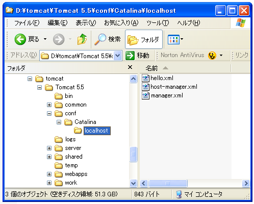
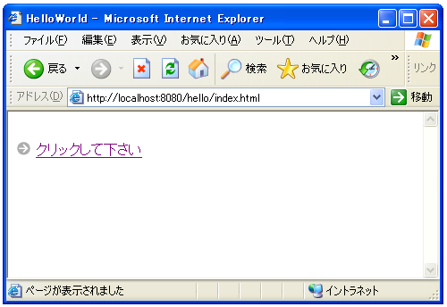
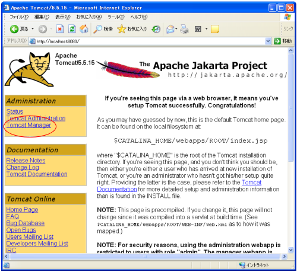
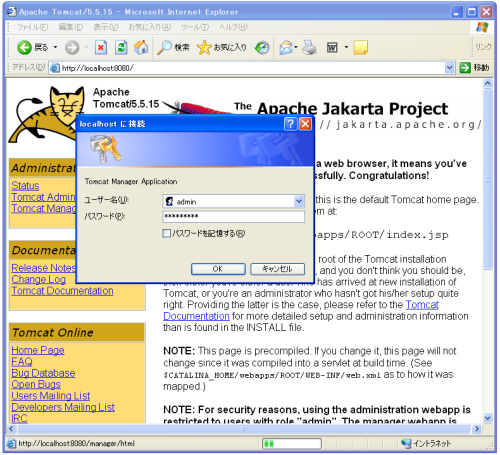
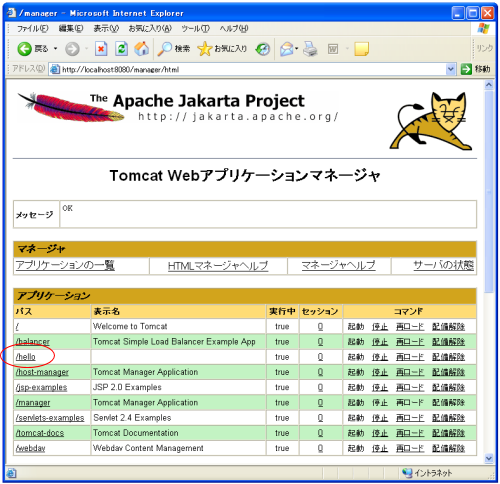

コンテキストの設定
次にコンテキストの登録を行います。contextとは「文脈; 背景, 情況」などと訳すようなのですが、アプリケーションの配置場所や呼び出し方などの情報を設定するものです。
これはアプリケーション単位で1つ用意します。
では今回のアプリケーション用にコンテキストの設定を行います。以前のバージョンでは「servlet.xml」ファイルに記載していましたが、現在では以下の手順に従って作成していきます。
コンテキストの設定ファイルの作成
コンテキストに関する記述を行ったxmlファイルを一つ用意します。今回は"hello.xml"という名前になります(ファイル名は後で指定するpathで指定する値と同じにしておけばいいようです)。このファイルの中身は下記のようなものになります。
<Context path="/hello" docBase="c:/servlet-sample/helloworld"/>
※上記は普通にテキストファイルとして作成して頂ければ結構です。
docBaseにはアプリケーションのルートディレクトリを指定します。今回は「c:¥servlet-sample¥helloworld¥」としましたので、上記のような記述となります。
pathには今回利用するアプリケーションを呼び出す時に付ける文字列を指定します。上記のようにhelloと付けた場合には、
http://localhost:8080/hello/index.html
のような呼び出し方となります。
コンテキストの設定ファイルの配置
先ほど作成したxmlファイルを下記の場所に設置します。

場所はTomcatをインストールしたディレクトリの中の、
<Tomcatをインストールしたディレクトリ>¥conf¥Catalina¥localhost
に置きます。
ここまで出来たら、一度Tomcatを再起動して下さい。
HTMLの表示テスト
では取り合えずHTMLファイルが表示されるかだけテストしてみましょう。ブラウザで下記のようにURLを指定してみて下さい。
http://localhost:8080/hello/index.html
下記のように表示されていれば大丈夫です。

Tomcat Managerでの確認
ここでTomcatManagerを使って確認しておきましょう。Tomcatのトップページをブラウザで開いて下さい。
http://localhost:8080/
下記のように表示されると思いますが、赤丸で囲まれた位置にある"Tomcat Manager"をクリックして下さい。

すると下記のようにユーザー認証画面が出てきますので、管理者用アカウントとパスワードを入力して下さい(Tomcatのインストールの際に指定したユーザー名とパスワードです)。

ユーザー認証で成功すると下記のような画面となります。ここで「アプリケーション」というところに今回登録したコンテキストがあるかどうか見ておいて下さい。

上記のようになっていればアプリケーションの登録が無事終わっています。
( Written by Tatsuo Ikura )

著者 / TATSUO IKURA
初心者～中級者の方を対象としたプログラミング方法や開発環境の構築の解説を行うサイトの運営を行っています。